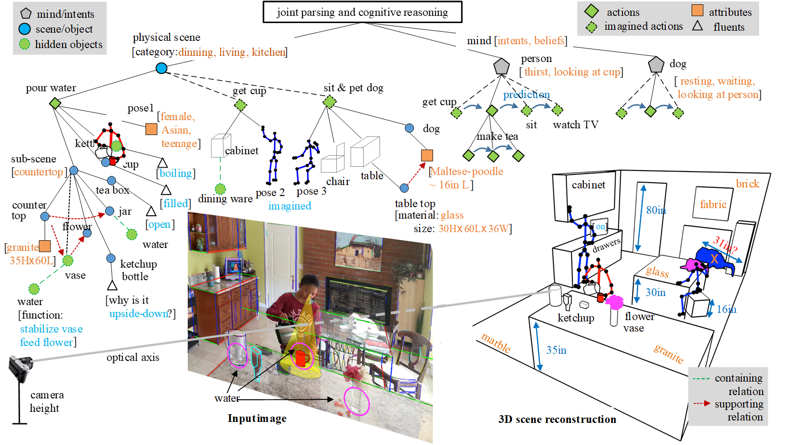
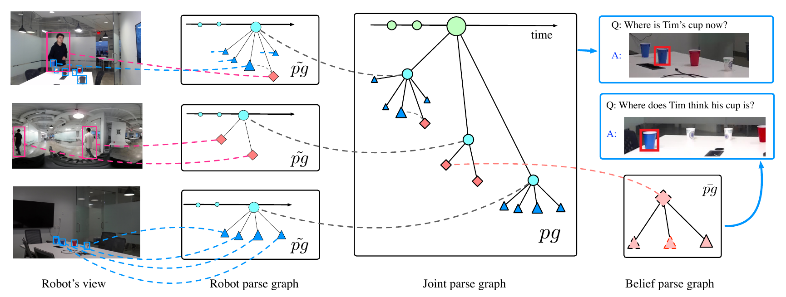
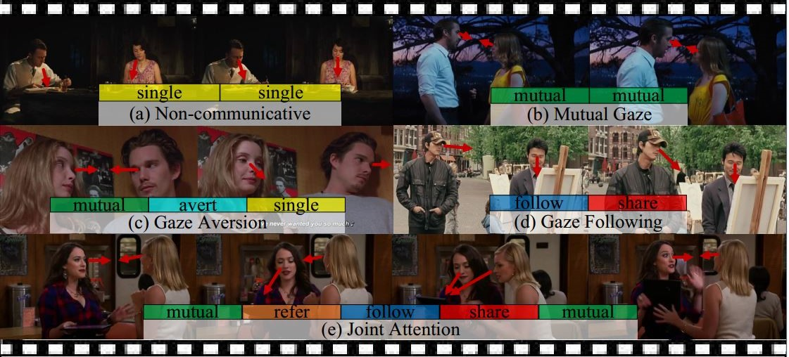
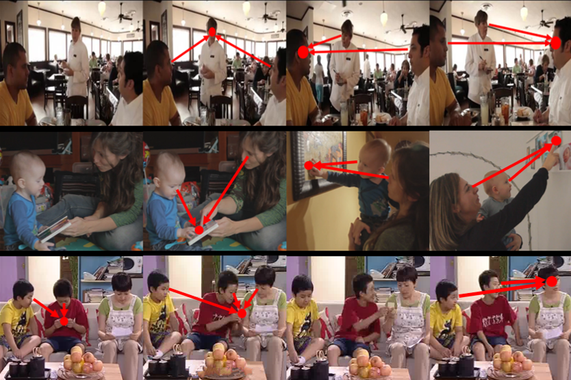
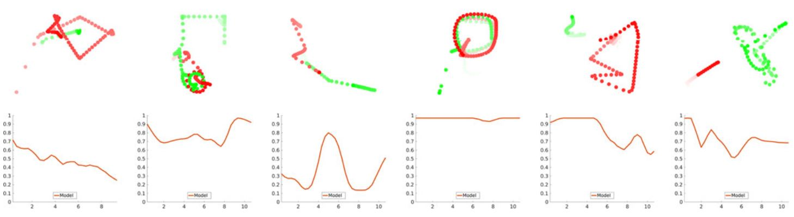
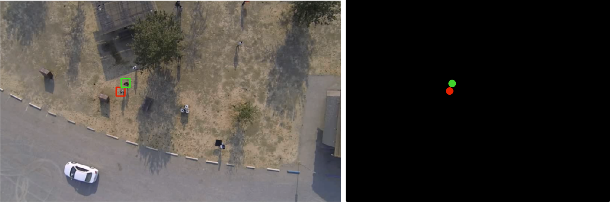

About Me
I'm a fifth-year Ph.D. student in the Department of Statistics at University of California, Los Angeles (UCLA). I work at the Center for Vision, Cognition, Learning and Autonomy (VCLA) under the supervision of Prof. Song-Chun Zhu. I received a B.S. in Statistics at Zhejiang University. My research interests include social scene understanding, cognitive modeling, human communication dynamics, social interaction and cooperation, Theory of Mind, computer vision, artificial intelligence, etc.
"Nothing in life is to be feared; it is only to be understood." --Marie Curie
News
06/2020: I started to work as a research intern at Facebook Reality Lab.
11/2019: I gave a poster presentation at ICCV 2019, Seoul, Korea.
09/2019: I gave a poster presentation at MURI 2019, Edinburgh.
06/2018: I gave a spotlight presentation at the 4th Vision Meets Cognition workshop, CVPR 2018, Salt Lake City.
03/2018: I advanced to candidacy.
09/2016: I started my Ph.D. life at UCLA.
Publication

|
Lifeng Fan*, Shuwen Qiu*, Zilong Zheng, Tao Gao, Song-Chun Zhu Yixin Zhu, IEEE Conference on Computer Vision and Pattern Recognition (CVPR), 2021. Paper / Bibtex |
|  |
Yixin Zhu, Tao Gao, Lifeng Fan, Siyuan Huang, Mark Edmonds, Hangxin Liu, Feng Gao, Chi Zhang, Siyuan Qi, Yingnian Wu, Joshua B. Tenenbaum, Song-Chun Zhu Engineering, Special Issue on Artificial Intelligence, 2020. Paper / Bibtex |
|  |
Tao Yuan, Hangxin Liu, Lifeng Fan, Zilong Zheng, Tao Gao, Yixin Zhu, Song-Chun Zhu The IEEE International Conference on Robotics and Automation (ICRA), 2020. Paper / Demo / Bibtex |
|  |
Lifeng Fan*, Wenguan Wang*, Siyuan Huang, Xinyu Tang, Song-Chun Zhu * Equal contributions The IEEE International Conference on Computer Vision (ICCV), 2019. Paper / Project / Bibtex |
|  |
Lifeng Fan*, Yixin Chen*, Ping Wei, Wenguan Wang, Song-Chun Zhu * Equal contributions IEEE Conference on Computer Vision and Pattern Recognition (CVPR), 2018. Paper / Project / Bibtex |
|  |
Tianmin Shu*, Yujia Peng*, Lifeng Fan, Hongjing Lu, Song-Chun Zhu * Equal contributions Topics in Cognitive Science, 10(1): 225 - 241, 2018. Paper / Bibtex |
|  |
Tianmin Shu*, Yujia Peng*, Lifeng Fan, Hongjing Lu, Song-Chun Zhu * Equal contributions the 39th Annual Meeting of the Cognitive Science Society (CogSci), 2017. (Computational Modeling Prize) Paper / Project / Bibtex |